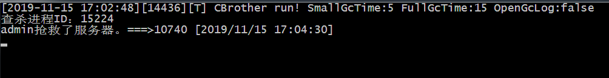

到了一家新公司，接手了一坨c++服务器代码，到处内存泄漏，这服务器没有数据库，挂了后重启一下就好了，公司就这么凑活着用了几年了，定时重启吧，也不是天天挂，不定时重启吧，说不准哪天就挂了。。。。。。
小公司，从写代码到维护就我一个人，每到下班后或者周末，电话一响，我就知道挂了，得找电脑重启一下，要是出去玩了还得找网吧，装个远程软件吧，公司说服务器之前被远程软件黑过，不准装，烦。
想着弄个什么程序在手机上点一下就给重启了就好了，咱这种写C++后台十几年的人，手机APP是不会开了，那就弄个网页服吧，选了半天，python的语法把我快看晕了。PHP研究一早上环境都没搭起来。找其他的，找到了一门CBrother脚本，语法跟C++共通之处，写http接口极其简单，跟作者聊了一下，10分钟就写出了我要的东西，现在我给公司其他同事一人一个账号，谁都可以重启服务了。为了感谢CBrother作者，这里写篇文章帮他宣传一下。
//入口函数，和c++一样，启动调用main函数，这点我喜欢
function main(params)
{
var httpServer = new HttpServer(); //创建一个http服务
httpServer.addAction("hello.cb",new HelloAction()); //注册hello.cb接口响应类HelloAction
httpServer.addAction("120120.cb",new Action120()); //注册重启接口为120120.cb
httpServer.setNormalAction("hello.cb"); //设置默认页调用 hello.cb
httpServer.startServer(11120); //设置服务端口为11120
//主线程不退出，除了语法简化外，套路和c++简直一摸一样
while (1)
{
Sleep(1000);
}
}class HelloAction
{
//接口的执行函数
function DoAction(request,respone)
{
//写一个表单，这都是大学时候学的东西，十几年了，幸亏还记了一点点，哈哈
respone.write("<html><head><title>抢救服务器</title><meta http-equiv=\"content-type\" content=\"txt/html; charset=utf-8\" /></head><body>");
respone.write("<br><FORM method=\"post\" action=\"120120.cb\">");
respone.write("<INPUT type=\"text\" name=\"username\"><br>");
respone.write("<input type=\"password\" name=\"userpass\"><br>");
respone.write("<input type=\"submit\" value=\"抢救\"></FORM></body><html>");
respone.flush();
}
}var g_userMap = {"admin":"123.123","huangyi":"256.256","boss":".boss1boss"};//定义用户密码
var g_exepath = "D:\\work\\FVServer\\FVServer.exe"; //进程路径
var g_exeName = "FVServer.exe"; //进程名称
class Action120
{
function DoAction(request,respone)
{
respone.write("<html><head><title>抢救服务器</title><meta http-equiv=\"content-type\" content=\"txt/html; charset=utf-8\" /></head><body>");
var fromdata = request.getFormData(); //获取表单数据
if (fromdata == null)
{
respone.write("我不认识你</body><html>");
respone.flush();
return;
}
var userName = strlower(fromdata.getText("username")); //获取用户名，转小写
var pwd = fromdata.getText("userpass");
var pwdlocal = g_userMap[userName]; //判断用户是否存在
if (pwdlocal == null)
{
respone.write("我不认识你</body><html>");
respone.flush();
return;
}
if (pwdlocal != pwd) //判断密码是否正确
{
respone.write("密码错误</body><html>");
respone.flush();
return;
}
var oldid = 0;
respone.write("抢救中...");
var pidarr = GetProcessByName(g_exeName); //获取进程ID列表，应该只有一个
if (pidarr != null)
{
for (var i = 0; i < pidarr.size() ; i++)
{
print "查杀进程ID：" + pidarr[i];
KillProcessByID(pidarr[i]); //查杀进程
}
Sleep(2000);
}
respone.write("<br>抢救中...");
var pid = CreateProcess(g_exepath); //重新启动一个
respone.write("<br>抢救成功。进程ID:" + pid);
respone.flush();
//把当前时间打印出来
var t = new Time();
print userName + "抢救了服务器。" + oldid + "===>" + pid + t.strftime(" [%Y/%m/%d %H:%M:%S]");
}
}之后从官网（http://www.cbrother.net/）下载CBrother，然后再控制台输入启动命令
d:\cbrother_v2.1.0_win64\cbrother.exe d:\cbrother\check.cb,服务器就启起来了。
然后可以通过手机访问这个端口重启服务器了
输入账号密码重启
再打电话也不用急急忙忙去找电脑了，手机一点就OK，打电话的人自己页可以重启了。
服务器界面显示

总体来说，CBrother脚本很符合我的编程理念，而且封装的很简单，后面还要深入学习下。